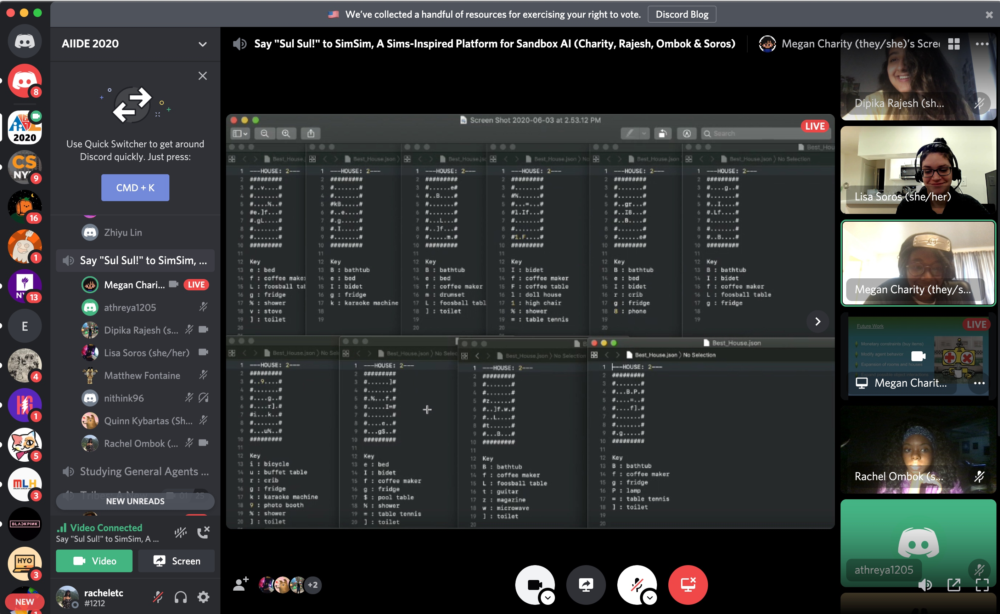

Say "Sul Sul!" to SimSim, A Sims-Inspired Platform for Sandbox Game AI AIIDE-20 (16th AAAI Conference on Artificial Intelligence and Interactive Digital Entertainment)
Programmer
February 2020 to August 2020
This paper proposes environment design in the life simulation game The Sims as a novel platform and challenge for testing divergent search algorithms. In this domain, which includes a minimal viability criterion, the goal is to furnish a house with objects that satisfy the physical needs of a simulated agent. Importantly, the large number of objects available to the player (whether human or automated) affords a wide variety of solutions to the underlying design problem. Empirical studies in a novel open source simulator called SimSim investigate the ability of novelty-based evolutionary algorithms to effectively generate viable environment designs.
This spring I applied to NYU’s Game Innovation Lab for an internship, the lab does research focused on games as an innovation challenge and emphasizes on the technical/engineering/science side of games and simulation. For my internship, I worked on a project for The Sims. The general goal of the project was to create general intelligence for the game using a quality diversity algorithm. Throughout the semester I attended group meetings, coded game objects in the program for our experiments, and helped analyze and interpret the results.
For the past 20 years, The Sims has pioneered sandbox gaming and given players the ability to simulate and play with life in any way they choose. The Sims’ autonomous nature and customizable options creates an immersive experience for players. “Build. Buy. Live” is the game’s tagline and explains its core mechanics. Being able to create sims and insert them into any environment you can think of is a big factor of why the game attracts so many. Even though some points can be farfetched, the gameplay purposefully aims to simulate aspects of real life and introduces new twists to reality.
Sandbox games require players to master the skill of constrained creativity, often exploring complex design spaces while avoiding nonviable portions. Classic examples of such games include Minecraft, in which players must build enemy-proof shelters out of natural resources, and SimCity, which requires players to set zoning policies and otherwise allocate resources to enable population growth in a simulated city. This genre is unique because of its minimal goals imposed upon the player, which can then be satisfied using an enormous variety of strategies.
While the relative freedom in the Sims creates a unique gaming experience for human players, it also presents an underexplored kind of challenge for game AI: finding a diverse set of creative artifacts that satisfy a set of minimal constraints. Such domains can serve as a particularly appropriate testbed for a specific class of divergent evolutionary search algorithms that are driven primarily by domain-specific minimal fitness criteria instead of by completely continuous fitness gradients.
In this game, the player controls simulated humans called Sims that inhabit a house, which can be either pre constructed or built and furnished by the player. Each Sim has a set of needs (hunger, sleep, TODO finish list) that must be satisfied, with the satisfaction level for each need decreasing over time. Note that objects, such as furniture, and interactions with other Sims, can have positive and negative effects on these need satisfaction levels. Then, a primary task for the player is to select actions that will prevent the Sim's needs from becoming critically low. Importantly, there are no "win" or end conditions beyond any personal goals that the player might set. However, a Sim can die if certain needs, such as hunger, go unmet for too long, or if a Sim is swimming in a pool and the ladder is removed (causing the Sim to die from exhaustion). Thus, The Sims can essentially be thought of as two separate yet related gameplay challenges: 1) designing a house containing sufficient objects to prevent a Sim's needs from becoming critically low, and 2) selecting interactions with these objects such that the Sim's decaying need satisfaction levels are actually replenished in a timely manner.
I contributed by applying my knowledge of object oriented programming to create the classes for Sims, Rooms and furniture Objects. When coding the Sim object, I made sure each sim kept track of which room they were in and had methods to fulfill and deplete their needs. When a Sim is initialized, they are given 5 points in each need, and no specified coordinate points. Then, for the Object class, each Object was given a vector of need effects that would affect each Sim, and would keep track of its coordinates and which room it is in. For example, when a ‘coffee maker’ is initialized, it is given an effects vector of {2,0,-3,3,0,0}, each value affects a Sim’s needs in order of hunger, hygiene, bladder, energy, social and fun. Rooms have a set dimension of 10x10.
The simulation agent is a "Sim" character that will live and interact with objects placed inside the generated houses. When a sim is generated inside a house, its needs are affected by the objects in the room and how they affect its needs. For example, a room with a fridge, toilet, and bed are very comfortable for a Sim to live in since those objects help their needs. Conversely, a room with only lawn gnome decorations would not be a suitable environment for a Sim to live in. A Sims’ needs decrement at a random rate and the simulation ends when a Sim “dies”, or after a certain number of generations.
Sim characters must navigate to the position of these objects in order to interact with it. Typically in the Sims games, a human user observing the Sim character would command the Sim to navigate to a particular object to interact with it to replenish one or more of its needs. For our experiment, our Sim character agent has full knowledge of every object in the room and what needs they must replenish. Needs are prioritized based on a preset order, so that the Sim will attend to a more critical need (i.e. hunger or energy) over less critical needs.
Below is an example of various rooms that the Sim may be placed in. The first is an example of a bad room, filled with objects that would not sustain life for a Sim, and doesn't fully satisfy their needs. The next room contains the bare necessities that a Sim would need to survive. If any of these objects were removed, the room would become nonviable and have a fitness of 0. The last room is the most ideal because it satisfies all the needs and has a variety of methods for the Sim to satisfy their needs.
The agent is completely independent of the user and navigates to the closest object that can replenish a need whose value has fallen below a certain threshold. This navigation is done using breadth-first search, where the agent is placed in a room based on X-Y positive integer coordinate values. The agent is allowed to move in any 4 directions (north, south, east, or west) once every tick. Once the agent has reached the targeted object position, it is able to interact with it. Sim agents will only interact with an object until the diminished need that it is fulfilling is above the threshold. Some objects replenish a need more than others on a single interaction, but it is unlikely that a Sim will have every need satisfied to the maximum value.
Each room that the Sim is generated into has a set number of objects that may or may not satisfy its needs. To evaluate the fitness of a room, there were different criteria we looked at: the amount of open space in the room, number of facilities, rating of average Sim experience (happiness, hygiene, hunger, etc.), number and variation of decorations, etc. Here are some of the algorithms we used in our search:
✅ Random Search
✅ Minimal Criterion Novelty Search
✅ Regular Novelty Search
✅ Regular Fitness-Based Evolutionary Algorithm
Each Sim house generated has a set of objects placed within the rooms. The count of these objects are encoded into vectors that are compared to another house. The vector distance between each house is calculated and used for the k-nearest neighbor calculation in the vector space. A generated house is considered novel, if its fitness value is above a set threshold and its vector distance to the other novel houses is greater than some minimum novelty search criteria threshold value. This new house is then added to the novel list. Here are some ASCII representations of the generated houses.
The system ideally wanted to replace the three starter objects in the house - consisting of a bed, toilet, and fridge - with more efficient and satisfiable objects that were available from the entire object list. This demonstrated how the algorithm was able to select which objects were the "best" objects for a house. For example, the "coffee maker" object replaced beds in 50% of the final houses produced - due to the fact that the coffee maker renewed more of the energy need than the bed object and also replenished hunger. Similarly, in 25% of the final houses, a "bidet" replaced the starting toilet object. While they replenished the same amount for the bladder need, the bidet also replenished the fun need and thus proved to be a more optimal object in the house. Needs that were also not addressed by the starter objects - such as the fun need and social need - were also optimized through the hillclimber algorithm. In 70% of the final houses, a "foosball table" or "table tennis" object were placed - both being the best objects that could replace both the social and the fun need.
For game AI, the Sims domain proves to be an interesting challenge - placing an agent that is typically made to evolve and find a singular solution in an game environment where there is no one solution or main objective. We encourage researchers to use and improve upon the SimSim project in hopes that these experiments and this framework will be the start of many more environment design exploration projects.
This was my first research internship I've had, and I am proud that I was able to help contribute and author a published paper by the end of it. I learned many new things including Git control, object oriented programming and all the technical and procedural steps in conducting research. It was also a unique experience to research something related to video development as that is a deep passion of mine, academically and personally.
To see our code and experiments, check out our repo.
To read the paper, check it out here.
